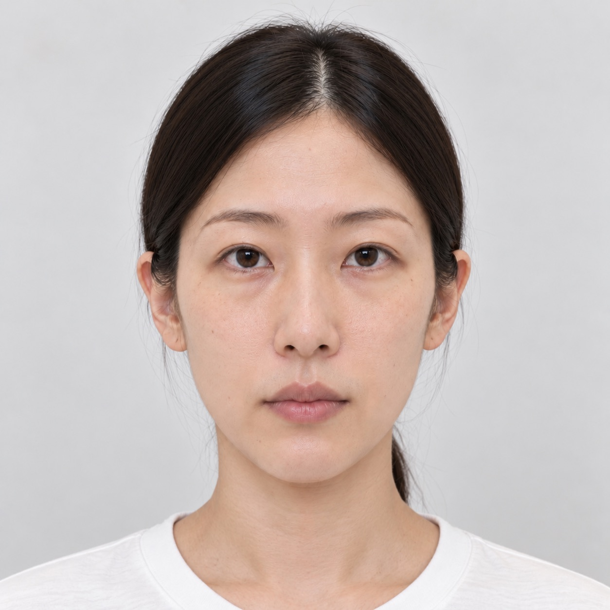
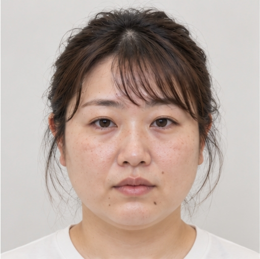
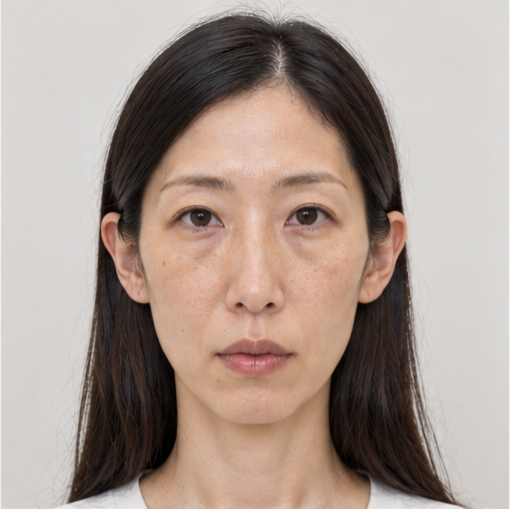
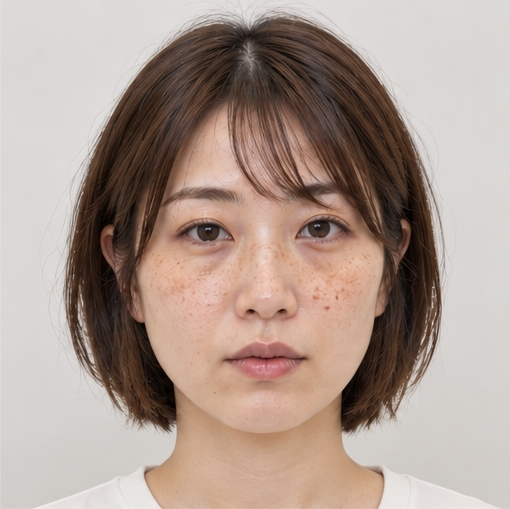

FINAL OPERATION REPORT／SOCIAL SCORE
最終運用報告書
取扱区分：内部資料／最終確認SECTION 01
計画の概要
FIORNEA FACEは、表向きには顔画像から特徴を整理し、美容医療の施術提案を支援するための技術として運用されている。内部では、顔形状の評価を「社会適合度」として数値化し、採用・人材紹介・信用などの社会的機会の配分に用いる仕組みが構築されていた。
計画にはFIORNEA DATA SYSTEMS、フィオルネア美容皮膚科・美容外科を中核とする複数の提携医院、および外部評価システムの運営側が関与する。美容医療だけで完結する計画ではない。
FIORNEA FACEとSOCIAL SCOREを接続し、顔の評価、社会的選別、美容医療への誘導を同一の運用循環に組み込む。
SECTION 02
顔評価データの取得
評価モデルは、以下の経路で顔形状と評価結果を収集・展開する。
評価対象は美容診断の利用者に限定されず、外部サービス上のプロフィール写真等まで拡張される。
SECTION 03
社会適合度による選別
SOCIAL SCOREは、人間の実際の能力や信用が顔立ちで決まることを発見したシステムではない。顔形状から一方的に数値を付け、その不当な判定を採用紹介の条件に使用する。

候補者A
- 職務能力
- 94
- 社会適合度
- 28
- システム判定
- 紹介対象外

候補者B
- 職務能力
- 72
- 社会適合度
- 96
- システム判定
- 採用推奨
候補者Aは職務能力94であっても、社会適合度28のため紹介対象から除外される。候補者Bは職務能力72であるが、社会適合度96により採用推奨と判定される。
SECTION 04
自己強化する評価システム
「再学習」とは、採用や人材紹介の結果を次回の評価モデルに取り込むことを指す。システムは顔と能力の客観的な関係を発見したのではなく、自ら行った差別的な選別結果を学習し、元の評価が正しいように見せている。
↑ 再学習されたモデルが次の顔形状評価をさらに強化する
SECTION 05
MODEL-01と美容医療への誘導
MODEL-01は美形や理想的な美人の顔ではない。容姿の優劣とは関係なく、評価制度への適合度が100点になるよう設定された、特徴が極めて少ない標準顔である。

顔形状をMODEL-01へ近づけるほど、システム上の社会適合度は高く評価される。低評価者に対しては、評価改善のための施術として提携美容クリニックを案内する「評価結果連動型施術推奨」が作動する。
問題は美しい顔を作ることではない。社会的機会を得る条件として、人々に顔の標準化を求めることにある。
SECTION 06
計画の目的と利益構造
FIORNEA DATA SYSTEMSの創業者は、当初、外見による不公平を可視化し、差別をなくすための研究を行っていた。しかし、顔の違いがある限り偏見は消えないという結論へ傾き、すべての顔を同じ形状へ近づけるSOCIAL SCOREと顔形状標準化計画を開発した。
経営陣は、顔評価が就職や信用に影響すれば美容施術の需要が増えると判断した。社会適合度の低い人物に採用等の不利益を発生させ、その評価を改善する手段として提携美容クリニックへ誘導することで、システム提供側と美容医療側の両方に利益が生じる。
人間が異なる顔を持つ限り、外見による優劣の判断はなくならない。社会的な評価基準を一つに統一し、すべての人間が同じ基準へ適合することができれば、容姿による不公平は解消される。MODEL-01は、そのための最終的な顔形状モデルである。
SECTION 07
全国24院への導入計画
共通AIを24院へ導入し、顔形状と施術前後の評価を収集する。フィオルネアは中核施設である。多数の医院には共同研究として説明され、採用選別への転用は認識されていない。
| No | 施設コード | 地域 | 導入状態 |
|---|---|---|---|
| 01 | FC-001 | 東京都・都心部 | 中核拠点 |
| 02 | FC-002 | 東京都・城西部 | 運用中 |
| 03 | FC-003 | 東京都・城南部 | 運用中 |
| 04 | FC-004 | 神奈川県 | 運用中 |
| 05 | FC-005 | 埼玉県 | 運用中 |
| 06 | FC-006 | 千葉県 | 運用中 |
| 07 | FC-007 | 茨城県 | 運用中 |
| 08 | FC-008 | 栃木県 | 運用中 |
| 09 | FC-009 | 群馬県 | 運用中 |
| 10 | FC-010 | 北海道 | 運用中 |
| 11 | FC-011 | 宮城県 | 運用中 |
| 12 | FC-012 | 福島県 | 運用中 |
| 13 | FC-013 | 新潟県 | 運用中 |
| 14 | FC-014 | 石川県 | 運用中 |
| 15 | FC-015 | 長野県 | 運用中 |
| 16 | FC-016 | 静岡県 | 運用中 |
| 17 | FC-017 | 愛知県 | 運用中 |
| 18 | FC-018 | 京都府 | 運用中 |
| 19 | FC-019 | 大阪府 | 運用中 |
| 20 | FC-020 | 兵庫県 | 運用中 |
| 21 | FC-021 | 岡山県 | 運用中 |
| 22 | FC-022 | 広島県 | 運用中 |
| 23 | FC-023 | 福岡県 | 運用中 |
| 24 | FC-024 | 熊本県 | 運用中 |
※施設名・住所の実在との混同を避けるため、ゲーム内では架空の施設コードと地域のみを使用します。
SECTION 08
最終運用結果／東京都心部拠点3患者比較
東京都心部の同一拠点FC-001で記録された患者A・B・Cは、それぞれ異なる人物である。施術後の顔形状を同時に比較すると、主要な特徴が共通のMODEL-01へ近づいている。



FC-001の患者A・B・Cの施術前画像。
SECTION 09
MODEL-01／最終運用記録
- 評価モデル
- MODEL-01
- 社会適合度
- 100／100
- 採用評価
- 最優先
- 全国導入施設数
- 24院
- 外部企業向け評価システム
- 運用中
- 美容医療施術推奨システム
- 連動済
- 社会的実績による再学習
- 継続中
- 顔形状標準化計画
- 進行中